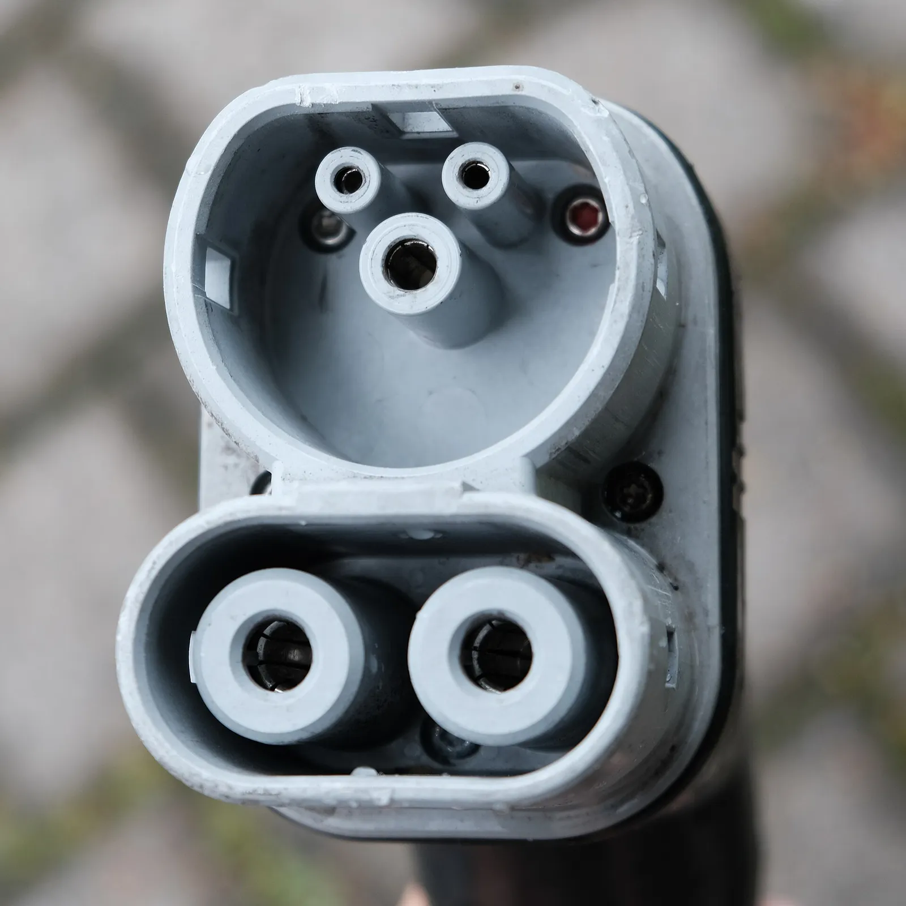
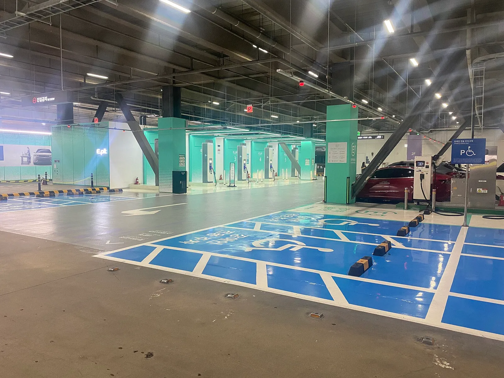
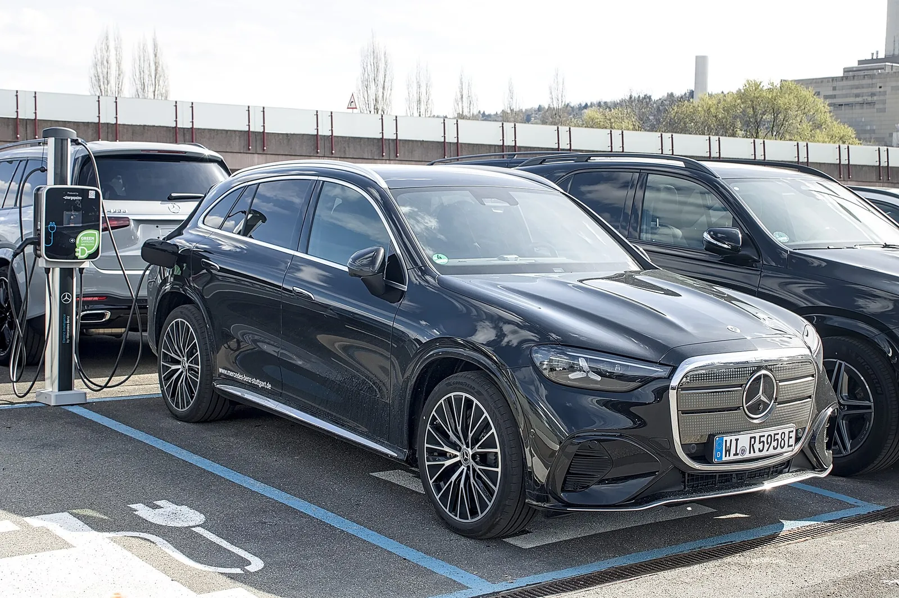
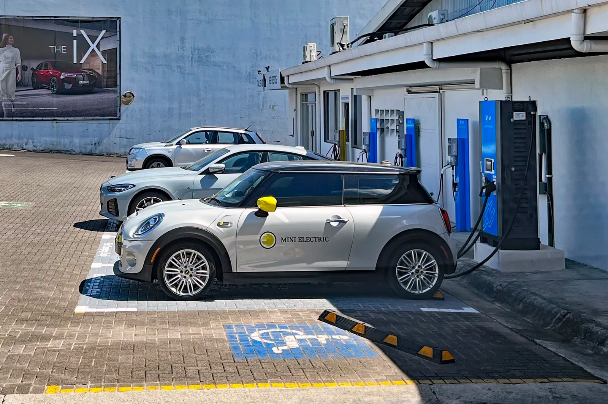
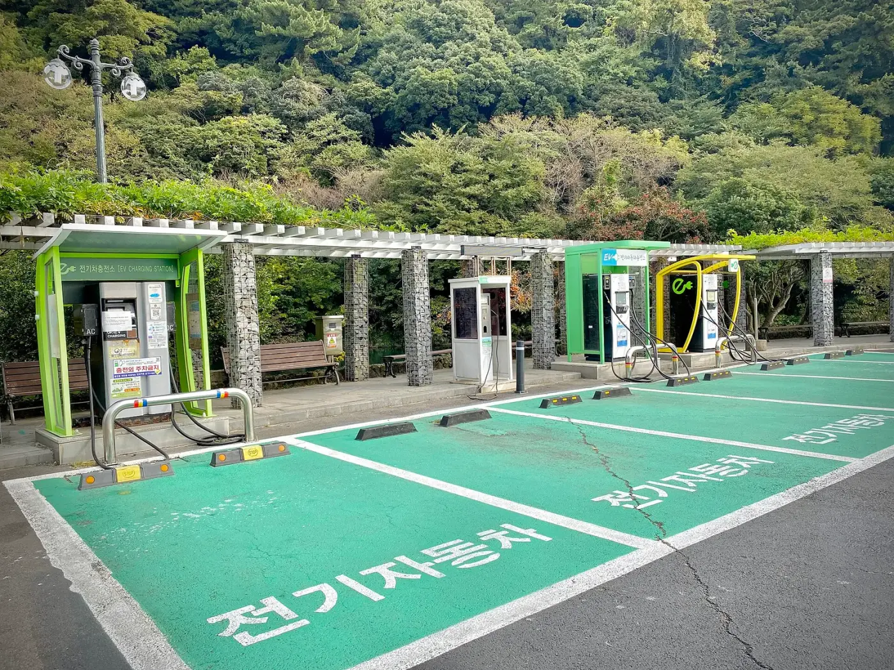
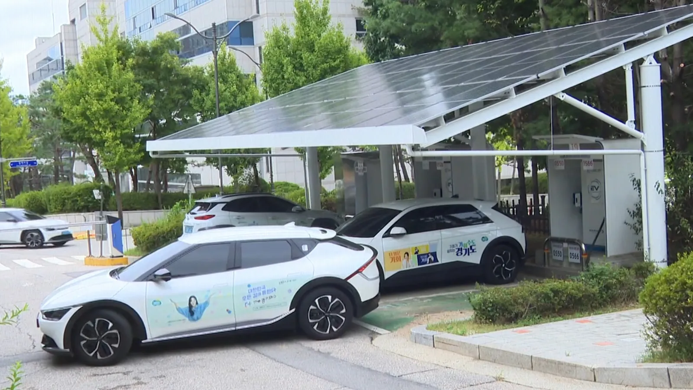
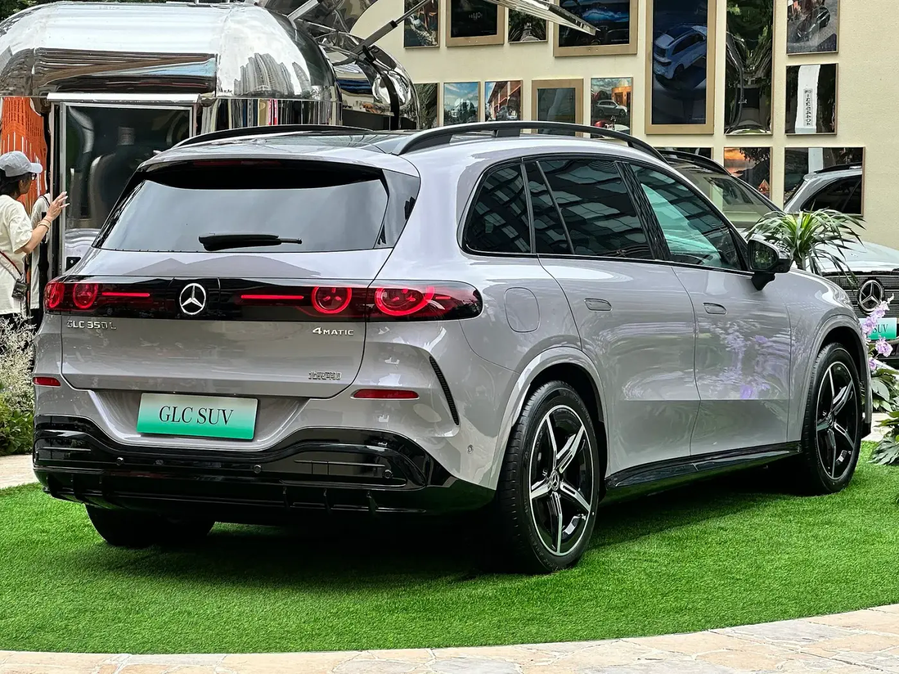
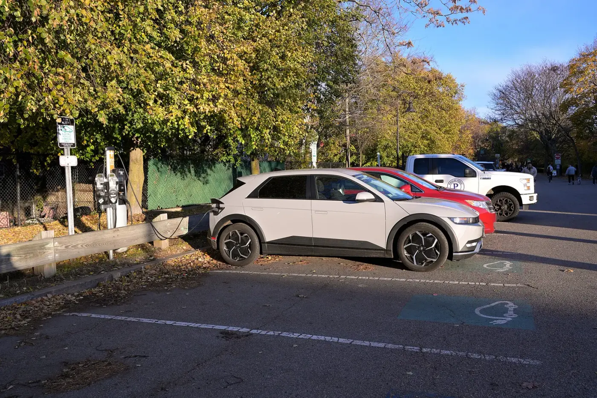
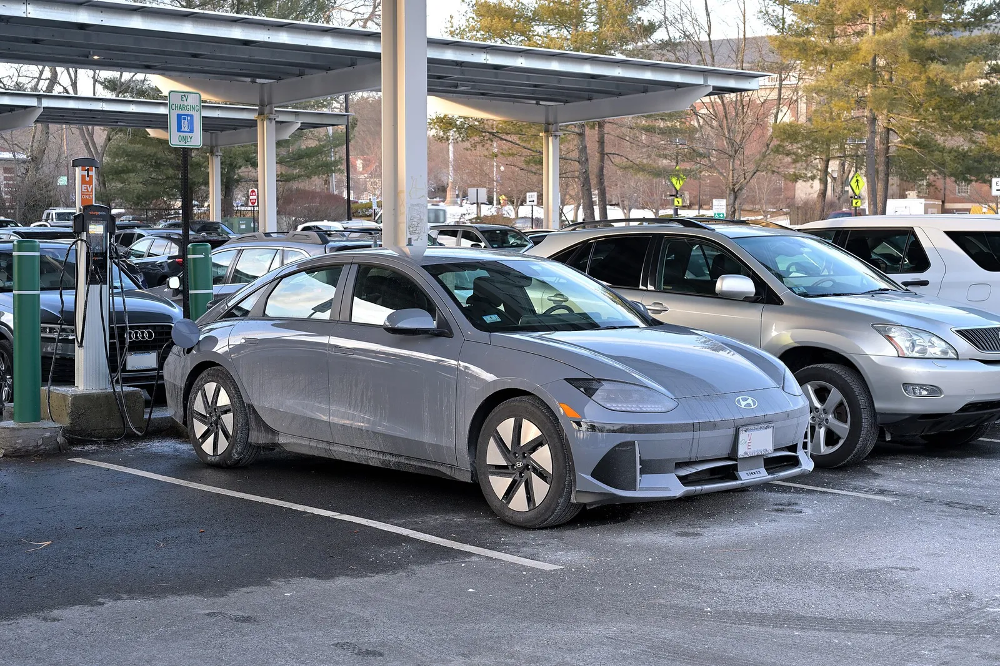

▲ PnC 첫 적용 차종으로 보도된 CLA 계열의 전시차(미국 오토쇼 촬영, 한국 사양과 다를 수 있음) ⓒ Charles from Port Chester (Wikimedia Commons, CC0)
"케이블만 꽂으면 인증도 결제도 끝." 벤츠코리아가 2027년 1분기 국내 서비스 개시를 목표로 PnC(플러그 앤 차지) 도입을 밝혔다. 지피코리아와 오토트리뷴 보도를 교차 대조하면 첫 적용 차종은 신형 전기 CLA와 GLC이고, 10월 1일 기후에너지환경부가 연 공개 시연에도 참여했다. 그런데 정작 오너에게 중요한 질문은 따로 있다. 결제 방식이 바뀌면 충전요금제 선택도 달라질까. 이 글은 보도 내용에서 확인된 것과 확인하지 못한 것을 가르고, 어제 쓴 충전요금 구조 기사의 단가로 카프리즘이 직접 계산해 답한다.
1. 무엇이 발표됐나 — 확인된 것과 확인 못 한 것
지피코리아와 오토트리뷴은 같은 사실을 전했다. 벤츠코리아가 2027년 1분기 PnC 서비스 개시를 목표로 하며, 첫 적용 모델은 올 뉴 일렉트릭 CLA와 GLC라는 내용이다. 지피코리아는 여기에 10월 1일 한국전기연구원 안산 분원에서 열린 시연에서 6개 전기차 모델과 3종의 공공 급속충전기 호환을 확인했다고 적었다. 오토트리뷴은 같은 행사에서 일렉트릭 CLA가 제조사·충전사업자 간 호환성 검증에 참여했다고 전했다. 시연 규모(6개 모델, 3종)는 오토트리뷴 원문에도 "전기차 6종·공공 급속충전기 3종"으로 나와 두 매체가 일치한다.
| 항목 | 확인된 내용 | 출처·확인 수준 |
|---|---|---|
| 도입 시점 | 2027년 1분기(서비스 개시 목표) | 지피코리아·오토트리뷴 일치 |
| 첫 적용 차종 | 신형 일렉트릭 CLA·GLC | 양쪽 보도 일치 |
| 사용 방식 | 최초 1회 결제수단 등록·차량 인증서 설치 후 케이블 연결만으로 자동 처리 | 양쪽 보도 일치 |
| 공개 시연 | 10월 1일, 기후에너지환경부 주관, 한국전기연구원 안산 분원 | 지피코리아(일시·장소), 오토트리뷴(일자) |
| 시연 규모 | 6개 전기차 모델·공공 급속충전기 3종 | 두 매체 일치(지피코리아·오토트리뷴) |
| 활성화 시점의 단서 | 오토트리뷴 원문은 "실제 이용 가능 시점은 차량 모델과 연식에 따라 달라질 수 있다"고 적었다 | 오토트리뷴 원문 열람 |
| 시연 방식 | CLA가 제작사별 차량 중 하나로 참여해 공공 인증체계를 활용한 자동 인증·충전 작동 여부를 검증(지피코리아 원문 표현) | 지피코리아 원문 열람 |
| 병행 서비스 | MB.차지퍼블릭(GS차지비 협력 통합 충전 서비스) | 양쪽 보도 일치 |
| 벤츠코리아 보도자료 원문 | 열어 확인하지 못했다 | 두 매체 보도로만 교차 확인 |
| PnC 가능 충전사업자 전체 목록 | 확인하지 못했다 | 기사에 명시 없음 |
이 기사에서 새로 알게 된 사실의 범위는 여기까지다. 아래 내용 중 보도에 없는 부분은 카프리즘의 추정 또는 계산으로 따로 표시했다.
2. PnC는 실제로 무엇을 바꾸나 — 카드·앱·PnC 비교
지금 국내 충전은 대개 사업자별 회원카드나 앱으로 인증하고, 충전 뒤 등록한 카드로 결제한다. PnC는 이 과정을 차량과 충전기가 암호화 통신으로 처리하는 방식이다. 현대차그룹의 2025년 12월 18일 발표에는 "차량과 충전기 사이에 암호화 통신을 적용"한다는 설명이 나오고, 한국경제 2026년 3월 24일 기사는 PnC가 ISO 15118 국제표준 기반이라고 설명했다. 다만 벤츠 쪽 두 기사는 "국제표준 기반 기술"이라고만 쓰고 ISO 15118이라는 표준 번호는 직접 쓰지 않았다. 벤츠가 같은 표준을 쓴다고 보는 것은 합리적 추정이지만, 보도로 확정되는 사실은 아니다.
| 단계 | 회원카드 | 앱 인증 | PnC |
|---|---|---|---|
| 인증 | 카드 태그 | 앱에서 충전기 선택·시작 | 케이블 연결 시 차량 인증서로 자동 |
| 충전 시작 | 충전기 화면 조작 | 앱 조작 | 자동(연결 직후) |
| 결제 | 등록 카드로 후불 | 앱 등록 카드 | 최초 등록한 결제수단으로 자동 |
| 사전 준비 | 사업자별 카드 발급 | 사업자별 앱 설치·가입 | 최초 1회 결제수단 등록·인증서 설치 |
| 연결이 어려운 경우 | 카드 분실·미소지 | 휴대폰 배터리·통신 불량 | 충전사업자·충전기가 PnC 미지원이면 기존 방식 필요(추정) |
ISO 15118이란. 위키피디아의 설명에 따르면 ISO 15118은 전기차와 전력망 사이의 통신 인터페이스를 정한 국제표준(공식 명칭 "Road vehicles — Vehicle to grid communication interface")이고, PnC는 이 표준에서 차량과 충전기가 공개키 인증서를 주고받아 수동 인증 없이 사용자를 확인하는 기능이다. 암호화 통신(TLS)과 인증서 신뢰 체계(V2G-PKI)가 바탕이다. 1세대 규격 ISO 15118-2는 2014년, 2세대 ISO 15118-20은 2022년에 발행됐다(위키피디아 기준). ISO 공식 페이지는 접속이 차단돼(403) 직접 열지 못했고, 벤츠 차량·충전기가 어느 세대를 쓰는지는 어디서도 확인하지 못했다. 같은 PnC라도 세대가 다르면 호환 범위가 달라질 수 있는지는 카프리즘이 확인하지 못한 부분이며, 시연에서 타사 차량과 맞춰 본 이유가 거기 있을 것이라는 건 추측이다.
📍 "카드가 없어진다"가 아니라 "카드를 안 꺼내도 되는 충전기가 늘어난다"
PnC는 차량과 충전기가 모두 지원해야 작동한다. 시연이 3종의 공공 급속충전기에서 이뤄졌다는 보도는 있지만, 전국 충전기 중 PnC 대응 비율은 이번 보도에서 확인하지 못했다. 당분간 앱·카드는 예비 수단으로 남을 가능성이 높다는 것이 카프리즘의 판단이다.

▲ 국내 전기차 급속충전에 쓰이는 CCS 콤보 커넥터. PnC는 이 케이블을 꽂는 순간 통신으로 인증이 시작되는 방식이라고 보도됐다 ⓒ Danilo Bargen (Wikimedia Commons, CC BY-SA 4.0)

▲ 국내 도심 충전 구역(파일명 기준 서울역). 사업자·충전기 세대에 따라 PnC 지원 여부가 갈리며, 사진만으로 지원 여부는 알 수 없다 ⓒ Immanuelle (Wikimedia Commons, CC BY 4.0)
3. 시점의 함정 — 인도는 올해 4분기, PnC는 내년 1분기
카프리즘이 앞서 다룬 일렉트릭 CLA 사전계약 기사에 따르면 고객 인도는 2026년 4분기부터다. 일렉트릭 GLC 사전계약 기사도 인도를 4분기로 전했다. 반면 PnC는 2027년 1분기 도입이다. 단순 비교로 초기 인도 고객은 몇 달간 PnC 없이 타는 구간이 생긴다.
| 구분 | 인도 시작 | PnC 도입 | 공백 |
|---|---|---|---|
| 일렉트릭 CLA | 2026년 4분기 | 2027년 1분기 | 최소 몇 주~수개월(추정) |
| 일렉트릭 GLC | 2026년 4분기 | 2027년 1분기 | 최소 몇 주~수개월(추정) |
그 공백 동안 기존 구매자가 PnC를 쓰려면 차량 소프트웨어 업데이트가 필요한지, 인증서 설치가 어떻게 이뤄지는지는 이번 보도에서 확인하지 못했다. 정식 안내 전까지 "나중에 업데이트로 된다"고 단정하면 안 된다. 오토트리뷴 원문에도 "실제 이용 가능 시점은 차량 모델과 연식에 따라 달라질 수 있다"는 단서가 붙어 있어, 2027년 1분기는 서비스 개시 목표일 뿐 모든 차량의 활성화일이 아니다.

▲ 독일의 충전 구역에서 충전 중인 GLC(파일명 기준 'GLC with EQ Technology'). 한국 판매 모델과 세부 사양은 다를 수 있다 ⓒ Alexander Migl (Wikimedia Commons, CC BY-SA 4.0)
4. 현대차는 이미 하고 있다 — 벤츠와 무엇이 다른가
PnC는 벤츠만의 신기술이 아니다. 현대차그룹은 보도에 따르면 2021년부터 PnC 인증서와 발행 권한을 운영해 왔고, 2026년 6월 29일에는 충전사업자 채비와 제휴해 PnC 사용 가능 충전소를 기존 현대 E-pit 울트라 고속충전소 83곳에서 전국 1,500여 곳으로 넓힌다고 발표했다. 이어 7월 6일에는 기후에너지환경부·한국환경공단과 업무협약을 맺고 PnC 인증서·발행 권한을 정부에 무상 이관하기로 했다. 한국환경공단이 정부 통합 인증 시스템을 구축하고, 현대·기아·제네시스뿐 아니라 수입 전기차와 충전사업자도 표준화된 PnC를 쓸 수 있게 한다는 구상이다.
| 항목 | 벤츠코리아 | 현대차그룹 |
|---|---|---|
| 시작 시점 | 2027년 1분기 도입 예정 | 2021년부터 인증서·발행 권한 운영(보도) |
| 대상 차종 | 신형 전기 CLA·GLC부터 | 아이오닉 5 등 현대차그룹 전기차(2024년 4월 제주 렌터카 PnC 체험 시범에 아이오닉 5·6, 코나 일렉트릭, EV6·EV9, 니로 EV, GV60, G80·GV70 일렉트리파이드 9종이 쓰였다는 현대차그룹 발표가 있으나 현재 지원 전체 목록은 확인하지 못함) |
| 충전망 | MB.차지퍼블릭(GS차지비) 병행, 한전 등과 인증 인프라 협력 보도(2025년 7월, 도입은 2027년) | 채비 제휴로 전국 1,500여 곳(6월 29일 발표 기준) |
| 인증 체계 | 시연에서 타사 호환성 검증 참여 | 인증서·발행 권한을 정부(한국환경공단 통합 시스템)로 이관 협약 |
| 표준 언급 | 두 기사 모두 "국제표준 기반"으로만 표기(표준 번호 미언급) | 현대 발표는 "국제 표준 기술"로 표기, ISO 15118 명시는 한국경제(2026.3.24) 정책 기사 |
| 요금제 | MB.차지퍼블릭 PLUS(급속 299원/kWh로 보도) | 이번 조사에서 PnC 전용 단가는 확인하지 못함 |
핵심은 방향이다. 제조사별로 인증서를 따로 발급하던 구조가 정부 통합 인증 체계로 모이면, 벤츠 오너가 충전사업자를 고를 때 "내 차가 그 충전기와 인증서가 호환되는가"라는 부담이 줄 수 있다. 다만 통합 시스템의 가동 시점은 이번 조사에서 확인하지 못했고, 벤츠가 그 체계에 어떻게 연결되는지도 보도로는 알 수 없다. 이는 현재로선 방향성 이상으로 읽으면 안 된다.
국내 PnC 지원 현황 비교 — 확인되는 것만
"어느 브랜드가 지금 PnC를 쓸 수 있나"를 한 표로 모아 보았다. 각 칸은 이번에 직접 연 기사·보도자료에서 확인한 내용만 썼고, 확인하지 못한 칸은 비워 두지 않고 그렇게 표시했다.
| 주체 | 확인되는 발표·시점 | 확인되는 충전사업자·범위 | 확인하지 못한 것 |
|---|---|---|---|
| 현대·기아·제네시스 | 2021년부터 인증서·발행 권한 운영(2026.7 보도), 2024.4 제주 렌터카 체험, 2025.12.18 확대 계획, 2026.6.29 채비 제휴 | E-pit 83곳, 채비 등 12개 사업자와의 협업 계획(2025.12 발표), 급속 우선·완속은 2026년 하반기 정부 협력 계획 | 12개 사업자 중 실제 PnC 가동 충전소 수·현재 지원 전 차종 |
| BMW | 2022.4.11 한전과 PnC 공동 개발 협약, 2023년부터 순수전기차 탑재 계획으로 보도 | 한전 충전기에서 시작, 다른 브랜드 확대 가능성 언급(2022년 보도) | 실제 탑재 차종·현재 운영 여부(이번 조사에서 최신 자료 없음) |
| 벤츠 | 2025.7.8 한전과 PnC 서비스 계약, 2027년 1분기 서비스 개시 목표(2026.10 보도) | 한전 PnC 지원 충전기 전국 적용 예정, 향후 고출력 충전소(HPC)에도 적용 계획, 시연은 공공 급속충전기 3종 | 한전 외 사업자, 활성화일(모델·연식별 상이 가능) |
| 테슬라 | 이번 조사에서 국내 PnC 지원 현황을 확인하지 못함 | - | 전부 미확인 |
| 정부(기후에너지환경부) | 2026.3 공청회·"올해 가을 도입" 목표, 5월 실무협의(9월 말 시범 목표), 7월 6일 현대차그룹과 인증 권한 이관 협약, 10월 1일 시연 | 시범은 고속도로 휴게소·공공 급속충전소 중심으로 보도(헤럴드경제 5.27), 정부 통합 인증 시스템은 한국환경공단이 구축 | 통합 시스템 가동 시점, 10월 1일 시연 보도자료 원문 |
표에서 눈에 띄는 것은 벤츠와 BMW의 구조가 닮았다는 점이다. 두 회사 모두 한전과 먼저 손잡았고, 한전이 "차량별 전자인증서 발행 등 기술 기반을 지원"하는 구조다(디지털타임스 2025.7.8). 반면 BMW의 2023년 탑재 계획이 실제로 어떻게 됐는지는 이번 조사에서 확인하지 못했다. 그래서 "벤츠가 먼저가 아니라 늦었다"고 단정하기는 어렵고, 업계 최초 여부는 카프리즘이 판단하지 않았다.

▲ BMW 그룹 계열 미니 일렉트릭이 충전기에 연결된 모습(파일명 기준 2022년 코스타리카 촬영, 한국과 무관). BMW그룹코리아는 2022년 한전과 PnC 공동 개발 협약을 맺었다고 보도됐다 ⓒ Mariordo (Mario Roberto Durán Ortiz) (Wikimedia Commons, CC BY-SA 4.0)

▲ 충전 구역의 현대 아이오닉 5(케이블 연결 여부는 사진으로 확정하지 않음, 파일명 기준 미국 데이비스 스퀘어, 2025년 11월 촬영). 현대차그룹은 2021년부터 PnC 인증서를 운영해 왔다고 보도됐다 ⓒ 4300streetcar (Wikimedia Commons, CC BY 4.0)
5. 결제 방식이 바뀌면 요금제 선택은 달라지나 — 계산해 보면
결론부터 말하면 PnC 자체는 kWh당 단가를 바꾸지 않는다. 바뀌는 것은 두 가지다. 하나는 충전할 때 번거로움, 다른 하나는 "내 계약으로 어느 충전기에서 자동 결제되느냐"다. 요금은 어느 사업자와 어떤 요금제를 계약했느냐가 정한다. 벤츠코리아의 MB.차지퍼블릭 PLUS는 보도 기준으로 급속 299원/kWh, 완속 199원/kWh다. 이것을 어제 기사에서 정리한 비교 단가에 대입해 보았다.
📍 계산 전제
비교 단가는 충전요금 구조 기사에서 쓴 값이다. SK 비구독 급속 391원, 환경부 100~200kW 급속 348.4원, SK일렉링크 구독 최저 조합은 같은 기사 표의 월 비용을 가져왔다. MB.차지퍼블릭 PLUS는 299원으로 계산하되, 월 400kWh 초과분 요금과 1년 이후 PLUS 월 회비는 확인하지 못해 제외했다. 즉 아래 표는 "무료 1년 구간"의 이론값이다.
| 월 충전량 | PLUS 299원 | SK 비구독 391원 | 환경부 348.4원 | SK 구독 최저 조합 |
|---|---|---|---|---|
| 100kWh | 29,900 | 39,100 | 34,840 | 34,400(베이직) |
| 200kWh | 59,800 | 78,200 | 69,680 | 68,900(프로) |
| 300kWh | 89,700 | 117,300 | 104,520 | 98,900(프로) |
| 400kWh | 119,600 | 156,400 | 139,360 | 137,900(마스터) |
| 월 충전량 | vs 391원 | vs 348.4원 | vs SK 구독 최저 |
|---|---|---|---|
| 100kWh | 9,200 | 4,940 | 4,500 |
| 200kWh | 18,400 | 9,880 | 9,100 |
| 300kWh | 27,600 | 14,820 | 9,200 |
| 400kWh | 36,800 | 19,760 | 18,300 |
계산식은 월 충전량 × 단가다. 예를 들어 200kWh면 299원 × 200 = 59,800원이고, 391원이면 78,200원이라 월 18,400원 차이다. 연 12개월로 곱하면 약 22만 원(18,400 × 12 = 220,800원)이다. 환경부 단가와 비교하면 연 약 12만 원(9,880 × 12 = 118,560원) 수준이다. 다만 이 우위는 벤츠 MB.차지퍼블릭 망에서 충전할 때 성립한다. 2025년 11월 출시 당시 시대 보도에는 GS차지비와 로밍 제휴사를 통해 전국 공용 충전소의 약 90%에 접근할 수 있다고 소개돼 있어 접근성 자체는 낮지 않은 편이다(같은 기사에서 월 400kWh 한도를 확인했고, 1년 이후 회비에 대한 언급은 열람한 범위에서 찾지 못했다). 다만 적용 단가와 충전소 범위는 모델·연식별로 다를 수 있으니 본인 차량 조건을 확인하자.
PLUS 1년 이후 시나리오 — 월 회비가 얼마까지면 남는 장사일까
1년 무료가 끝난 뒤의 PLUS 월 회비는 열람한 범위에서 확인되지 않았다. 그래서 거꾸로 계산했다. PLUS 299원 기준 월 절감액이 곧 손익분기 회비다. 회비가 그 금액보다 작아야 PLUS가 이득이다(식: 비교 대상 월 요금 − 299원 × kWh = 허용 가능한 월 회비).
| 월 충전량 | vs 환경부 348.4원 | vs SK 구독 최저 조합 |
|---|---|---|
| 100kWh | 4,940 | 4,500 |
| 200kWh | 9,880 | 9,100 |
| 300kWh | 14,820 | 9,200 |
| 400kWh | 19,760 | 18,300 |
| 월 충전량 | 회비 0원 | 회비 5,000원 가정 | 회비 10,000원 가정 |
|---|---|---|---|
| 100kWh | 4,940 / 4,500 | -60 / -500 | -5,060 / -5,500 |
| 200kWh | 9,880 / 9,100 | 4,880 / 4,100 | -120 / -900 |
| 300kWh | 14,820 / 9,200 | 9,820 / 4,200 | 4,820 / -800 |
| 400kWh | 19,760 / 18,300 | 14,760 / 13,300 | 9,760 / 8,300 |
읽는 법은 단순하다. 회비가 5,000원이라면 월 100kWh 이하 오너는 이득이 사라지고, 1만 원이라면 월 200~300kWh 구간에서 SK 구독 최저 조합보다 오히려 손해다. 반대로 월 400kWh 근처로 많이 충전하면 회비 1만 원이어도 월 8천 원 이상 남는다. 다만 월 400kWh 한도를 넘는 충전분의 요금은 확인하지 못해 400kWh 초과 구간은 계산하지 않았고, SK 구독 열은 위 표의 구독 회비를 포함한 총액 기준이다. 요약하면 1년 뒤에는 "회비 공지를 보고 내 월 충전량으로 이 표를 다시 대입"하는 것이 정답이라는 것이 카프리즘의 해석이다.

▲ 국내 충전소는 사업자마다 충전기와 회원 체계가 다르다. PnC는 이 구분을 차량 인증서로 뛰어넘는 시도다(제주 서귀포) ⓒ Sharon Hahn Darlin (Wikimedia Commons, CC BY 2.0)
6. 그래서 어떤 요금제를 고를까 — 월 충전량별 판단
PnC가 요금제 선택에 미치는 영향은 "단가"가 아니라 "마찰 비용"에 있다. 카프리즘은 판단 기준을 네 가지 상황으로 정리했다.
| 상황 | 권장 방향 | 이유 |
|---|---|---|
| 월 100kWh 미만 | 구독 없이 PnC 대응 충전소 위주 | 절감액이 월 4천~9천 원 수준(위 표)이라 구독 관리 비용이 더 클 수 있음 |
| 월 100~300kWh, 벤츠 망 근접 | PLUS 무료 기간 활용 | 299원이 구독 조합보다 월 4,500~9,200원 저렴(이론값) |
| 월 300kWh 이상 | 1년 무료 기간 종료 후 조건 재계산 | 월 400kWh 초과분·PLUS 회비는 확인 못 함, 그때 SK 마스터 등과 다시 비교 |
| 집 충전 위주 | PnC보다 가정용 요금제 점검 | 어제 기사에서 다룬 누진제·시간대 요금이 공공 급속보다 큰 변수 |

▲ 태양광 지붕 아래 충전기와 흰색 전기 택시(파일명 기준 경기도 전기택시 충전소). 케이블 연결 여부와 PnC 지원 여부는 사진으로 확정하지 않음 ⓒ GTV경기도청방송국 (Wikimedia Commons, CC BY 3.0)
한 가지 더. PnC는 "자동 결제"라서 단가를 확인하지 않고 충전하기 쉽다. 앱에서 가격표를 보고 고르던 습관이 사라지면 사업자별 단가 차이(위 표에서 최대 월 3만 원대)를 놓칠 수 있다. 사용 전 한 번은 어떤 단가가 자동 적용되는지 확인하는 것이 좋다는 것이 카프리즘의 조언이다. 이는 보도 내용이 아니라 해석이다. 충전 단자 규격은 충전 커넥터 규격 가이드, 지역별 충전기 밀도는 충전 인프라 밀도 격차 기사, 요금제 전체 비교는 충전 요금제 완전정리에서 따로 다뤘다.

▲ 전시장의 GLC 일렉트릭 후면(파일명 기준 중국 시장용 GLC 350L 일렉트릭). 한국 판매 사양과 다를 수 있다 ⓒ JustAnotherCarDesigner (Wikimedia Commons, CC0)
7. 구매 타이밍·보조금과는 어떻게 이어지나
카프리즘은 전기차 구매 타이밍 기사와 2027년 보조금 기준선 기사에서 2027년에 PnC가 도입되고, 이 기능을 지원하는 차량에 인센티브가 붙는다고 정리했다. 벤츠의 1분기 도입은 그 흐름과 맞물린다. 다만 벤츠 CLA·GLC가 해당 인센티브 대상이 되는지는 이번 조사에서 확인하지 못했다. 두 차종의 가격대가 보조금 기준선과 어떻게 만나는지는 별도 계산이 필요하며, PnC만 보고 구매 시점을 정하는 것은 권하지 않는다. 오히려 계약 전에 인도 시점의 PnC 활성화 여부를 영업점에 서면으로 확인하는 쪽이 현실적이다.

▲ 충전 구역에 주차된 전기차(케이블 연결 여부는 사진으로 확정하지 않음, 같은 장소에서 촬영된 사진, 차종은 사진만으로 확정하지 않음) ⓒ 4300streetcar (Wikimedia Commons, CC BY 4.0)

▲ 주차장 충전 구역의 현대 아이오닉 6(파일명 기준 미국 뉴턴, 2026년 1월 촬영, 케이블 연결 여부는 사진으로 확정하지 않음) ⓒ 4300streetcar (Wikimedia Commons, CC BY 4.0)
✅ 벤츠 전기차 계약 전 확인 체크포인트
- 내가 인도받을 차량에 PnC가 처음부터 적용되는지, 이후 업데이트로 활성화되는지
- PnC로 자동 결제되는 충전사업자 목록(한전·GS차지비 외 어디까지인지)
- MB.차지퍼블릭 PLUS 무료 1년 종료 후 월 회비와 월 400kWh 초과 요금
- 내 생활권(집·직장·고속도로 경로)에 PnC 대응 급속충전기가 몇 곳인지
- 자동 결제 시 적용되는 kWh당 단가를 사전에 확인할 방법
- 인도 후 PnC 활성화 시점(오토트리뷴: 모델·연식에 따라 다를 수 있음)과 인증서 설치 절차
- 차량·충전기가 지원하는 ISO 15118 세대(-2/-20)와 타사 충전기 호환 범위
8. 확인하지 못한 것들
| 항목 | 상태 |
|---|---|
| 벤츠코리아 공식 보도자료 원문 | 열어 확인하지 못함. 지피코리아·오토트리뷴 기사 원문은 직접 열람해 내용 일치를 확인했고, 기후에너지환경부 시연 보도자료는 검색으로 찾지 못함 |
| 벤츠 PnC의 ISO 15118 적용 | 벤츠 두 기사는 "국제표준 기반"만 표기. ISO 15118 명시는 한국경제 정책 기사(2026.3.24)에만 있어 벤츠의 적용 여부와 세대(-2/-20)는 추정 |
| 제휴 충전사업자 범위 | 한전과의 PnC 서비스 계약 보도(디지털타임스, 2025년 7월 8일 보도, 도입은 2027년)에서 한전 PnC 지원 충전기 전국 적용 예정·고출력 충전소(HPC) 추가 계획까지 확인, GS차지비는 MB.차지퍼블릭 병행으로만 확인, 한전 외 전체 목록 미확인 |
| 시연 규모 6개 모델·3종 충전기 | 두 매체 일치(지피코리아·오토트리뷴) |
| 현대차그룹 통합 인증 시스템 가동 시점 | 확인하지 못함 |
| MB.차지퍼블릭 PLUS 299원의 적용 범위 | 월 400kWh 한도는 시대 보도로 확인, 초과분 요금·1년 후 회비는 미확인(5절 시나리오는 가정) |
| BMW 2023년 PnC 탑재 계획의 실제 이행 | 2022년 보도로만 확인, 최신 현황 확인하지 못함 |
| 테슬라의 국내 PnC 지원 | 확인하지 못함 |
| 기존 인도 차량의 PnC 업데이트 여부 | 확인하지 못함 |
9. 요약
벤츠코리아는 2027년 1분기 신형 전기 CLA·GLC부터 PnC를 도입한다. 최초 1회 결제수단 등록과 인증서 설치 뒤에는 케이블 연결만으로 인증·결제가 자동 진행된다고 지피코리아·오토트리뷴이 전했다. 인도는 2026년 4분기라 초기 고객은 PnC 없이 타는 구간이 생길 수 있다.
PnC는 단가를 바꾸지 않는다. MB.차지퍼블릭 PLUS 급속 299원 기준 월 200kWh 충전이면 SK 비구독 391원 대비 월 18,400원, 환경부 348.4원 대비 월 9,880원 저렴하다(이론값). 이 우위는 해당 망에서 충전할 때만 성립하고, 1년 무료 이후 회비와 월 400kWh 초과 요금은 확인하지 못했다.
현대차그룹은 2021년부터 PnC를 운영했고, 7월 인증서 권한을 정부에 이관하기로 했다. 통합 인증 체계가 가동되면 제조사별 호환 부담이 줄 수 있지만 시점은 미확인이다. 계약 전에는 인도 시점의 PnC 활성화, 제휴 사업자 목록, 무료 기간 이후 요금을 확인하는 것이 좋다.